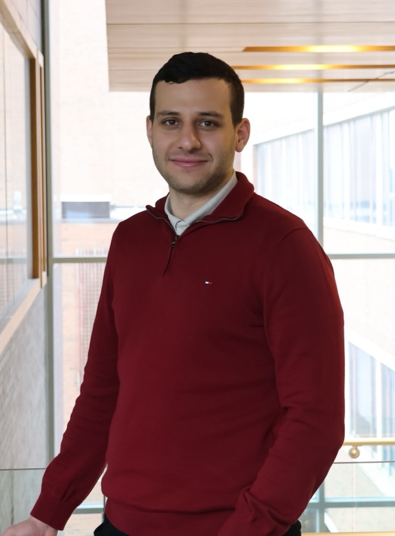

Welcome!
I am a fifth-year Ph.D. candidate in Accounting at the University of Waterloo, and I will be on the 2026–2027 academic job market. During the 2025–2026 academic year, I was a visiting doctoral student in the Accounting Department at the University of Chicago Booth School of Business.
My research focuses on the role stakeholders play in shaping firm behaviour. I am also interested in the role of information in capital markets. Prior to pursuing my Ph.D., I spent three years at Ernst & Young.